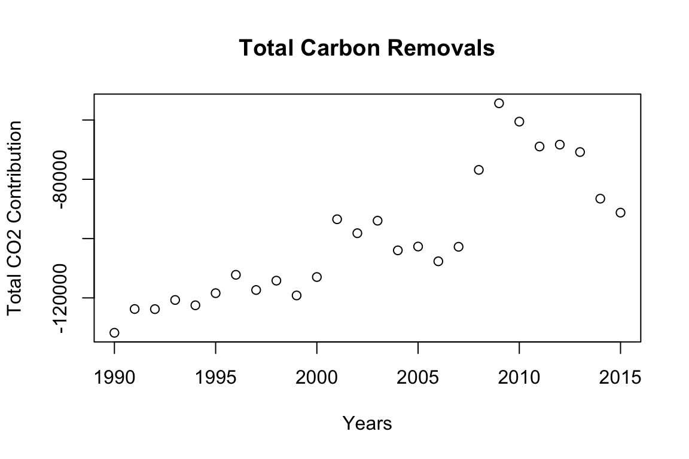

This package is designed to calculate the carbon sequestration in harvested wood products in the United States. Functions estimate carbon in wood products, solid-waste disposal sites, and paper. A collection of production, import and export data from various sources is used to calculate intermediate statistics which is then used to calulate the 5 HWP variables and the final carbon contribution.
The main goal is to calculate the final carbon contribution and produce a report which is reported to the IPCC. This is calculated based on the approach selected (Production, Stock Change, Atmospheric).
Currently, the Production Approach is the one used to report contribution values to the IPCC.
The final reported value is the contribution to AFOLU CO2 emissions/removal. It’s units are Gg CO2/Yr
To calculate the carbon contribution:
The default arguments calculate the carbon contribution from 1990 to 2015 using the Production approach. It returns a vector with the carbon contributions for each year.
finalCarbonContribution()
[1] -131771.55 -123758.01 -123790.61 -120707.52 -122498.31 -118411.13
[7] -112219.10 -117343.83 -114188.45 -119182.37 -112968.80 -93478.73
[13] -98188.13 -93967.40 -103967.46 -102683.17 -107666.14 -102762.70
[19] -76830.26 -54360.98 -60549.58 -68943.22 -68312.97 -70814.78
[25] -86538.26 -91250.87The years, approach used, decay distribution, and values for end use half life values can be entered as arguments. halfLives is a data frame with the default half life values.
finalCarbonContribution(Years = 1945:2017, approach = "Atmospheric Flow", halflives = halfLives* 1.2)
[1] NA NA NA NA NA NA
[7] NA NA NA NA NA NA
[13] NA NA NA NA NA NA
[19] NA NA -78308.38 -82523.71 -81192.12 -90159.05
[25] -93323.51 -93958.77 -97265.43 -107629.09 -113571.94 -99979.56
[31] -83051.22 -104095.72 -111752.16 -116493.46 -122197.14 -109902.98
[37] -97992.01 -92375.00 -114448.74 -122623.82 -119717.47 -132998.11
[43] -144987.09 -152465.61 -152013.85 -144441.38 -137496.16 -137745.69
[49] -133990.37 -136115.73 -134300.04 -128846.80 -133796.04 -129272.19
[55] -134001.92 -127050.19 -107138.55 -110135.83 -105529.93 -115422.26
[61] -114414.86 -121047.81 -118666.59 -95500.76 -76798.66 -86304.90
[67] -98557.46 -98602.14 -102661.75 -115609.44 -117582.69 -118636.00
[73] -121545.00A plot can be returned.
finalCarbonContribution(plot = TRUE)
[1] -131771.55 -123758.01 -123790.61 -120707.52 -122498.31 -118411.13
[7] -112219.10 -117343.83 -114188.45 -119182.37 -112968.80 -93478.73
[13] -98188.13 -93967.40 -103967.46 -102683.17 -107666.14 -102762.70
[19] -76830.26 -54360.98 -60549.58 -68943.22 -68312.97 -70814.78
[25] -86538.26 -91250.87finalVariables returns a data frame with all of the HWP variables.
Alternate years, decay distribution, and half lives can be substituted for defaults.
finalVariables()
Years Var1A Var1B Var2A Var2B Var3 Var4
1 1990 17043.7116 18307.63 17659.33357 18278.36 12679.50 15078.00
2 1991 13128.8249 18601.57 14939.85484 18812.33 11551.75 15667.47
3 1992 15717.7392 17005.52 16334.42946 17426.64 12855.64 16032.21
4 1993 16956.7233 17626.58 14971.22105 17949.01 14511.74 14788.17
5 1994 18220.9725 17220.93 15929.56956 17479.06 15684.97 15665.37
6 1995 17306.8633 17051.47 15064.95468 17228.99 16712.32 17265.89
7 1996 17018.0011 16347.53 14092.14081 16513.07 16690.67 16732.92
8 1997 18755.6290 17090.10 14740.11768 17262.74 17983.12 16876.90
9 1998 19653.6773 17769.37 13403.94806 17738.36 18994.15 15056.85
10 1999 21444.2277 18662.30 14145.55577 18358.73 20599.10 15245.33
11 2000 19999.5154 18508.29 12840.05979 17969.61 21857.50 16184.63
12 2001 16491.4294 17610.24 8713.21957 16780.98 22051.45 15336.17
13 2002 17413.8298 18235.45 9565.67340 17212.91 23209.92 15743.99
14 2003 16986.4185 17325.96 9452.50336 16174.97 23706.93 16302.59
15 2004 21409.1983 17643.50 12079.90850 16274.85 26427.58 16952.97
16 2005 20989.8919 17765.22 11710.88488 16293.62 26792.51 17312.49
17 2006 19082.7521 18586.79 12095.26266 17268.23 25442.39 18835.68
18 2007 13091.5426 18307.97 10639.00367 17387.19 21649.52 20656.59
19 2008 2420.1492 17510.54 3864.02978 17089.68 16981.71 21158.54
20 2009 -5103.8430 16641.59 -1820.66173 16646.38 13114.89 20616.42
21 2010 -2895.9387 16300.85 -59.18892 16572.71 14161.49 22419.91
22 2011 -1887.2390 16171.28 1998.34356 16804.35 13922.97 24671.92
23 2012 -298.5597 16112.04 1724.39575 16906.41 14067.44 23323.55
24 2013 2298.3609 16188.34 2318.94405 16994.18 15142.07 22850.52
25 2014 12943.6684 17146.43 6234.96310 17366.38 19008.74 18657.41
26 2015 13474.0869 17965.44 7141.21700 17745.38 19872.28 18716.93
Var5
1 142297.14
2 144434.61
3 139388.54
4 134553.68
5 134750.37
6 137026.51
7 134477.27
8 135438.73
9 134206.11
10 134192.96
11 133694.05
12 127896.01
13 126866.06
14 126477.26
15 131737.71
16 132481.61
17 129528.83
18 123639.75
19 106096.03
20 96032.07
21 97555.35
22 100848.20
23 103469.51
24 107005.04
25 100350.97
26 102198.42Carbon in solid wood products, paper and solid waste disposal sites (SWDS) is estimated. There are functions to calculate amounts of carbon stored in these places.
swpcarbontotal() calculates total carbon stored in solid wood products in oven-dry tons of wood fiber. It gives the option of returning carbon totals by end use (the default argument returns total carbon for all end uses). Alternate approaches and half life values can be used. lumberpre allows carbon from lumber before 1900 to be excluded from total.
swpcarbontotal(c(1990,2015), onlytotal = FALSE, lumberpre = FALSE,
approach = "Stock Change", halflives = halfLives * .9)
Years EU1 EU2 EU3 EU4 EU5 EU6 EU7
1 1990 711997891 177943676 64020379 267419244 117241559 31949898 3828763
2 2015 1045739543 162923082 90506785 376198692 170804689 29755821 4278874
EU8 EU9 EU10 EU11 EU12 EU13 LumberPre1900
1 100213040 34991435 85106106 179199837 227168744 435352707 70903425
2 158547648 86069446 131441369 218238442 269893945 351612290 38450600
Total Carbon
1 2507336701
2 3134461226fsp, fnsp, and fsawn allow for adjusting the product class distributions over the end uses. The default values are provided in the corresponding data frames (fracstrpanels, fracnonstrpanels, fracsawnwood).
New values can be substitued directly in the function call, or a copy can be made which can then be changed.
#Directly in function
adj <- (1 + rnorm(13, 0, .15))
finalCarbonContribution(fsp = fracstrpanels * adj)
[1] -134042.24 -121929.57 -125598.69 -116768.92 -122152.00 -117953.96
[7] -114197.29 -115515.74 -113915.95 -117666.50 -112038.29 -92827.56
[13] -98992.28 -96582.52 -101889.62 -104679.30 -103234.97 -102491.57
[19] -76553.42 -55840.89 -59331.79 -68865.51 -67320.47 -70187.20
[25] -86085.71 -91988.21
#Make a copy first
fsawncopy <- fracsawnwood
for (i in ncol(fsawncopy)) {
fsawncopy[,i] <- fsawncopy[,i] * rnorm(13,0,.05+i)
}
Warning in fsawncopy[, i] * rnorm(13, 0, 0.05 + i): longer object length is
not a multiple of shorter object length
finalCarbonContribution(fsawn = fsawncopy)
[1] -131771.55 -123758.01 -123790.61 -120707.52 -122498.31 -118411.13
[7] -112219.10 -117343.83 -114188.45 -119182.37 -112968.80 -93478.73
[13] -98188.13 -93967.40 -103967.46 -102683.17 -107666.14 -102762.70
[19] -76830.26 -54360.98 -60549.58 -68943.22 -68312.97 -70814.78
[25] -86538.26 -91250.87